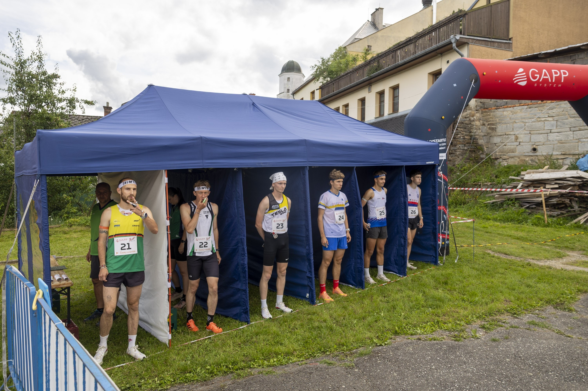
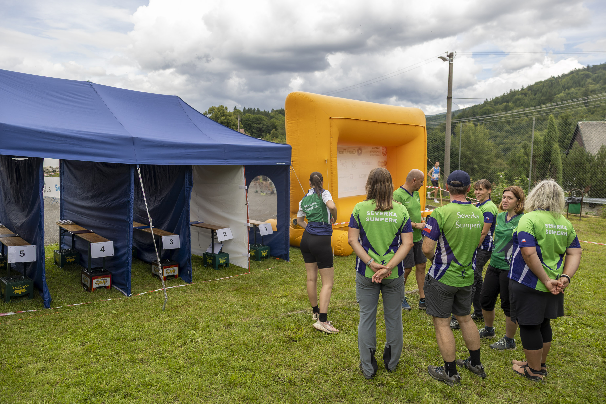
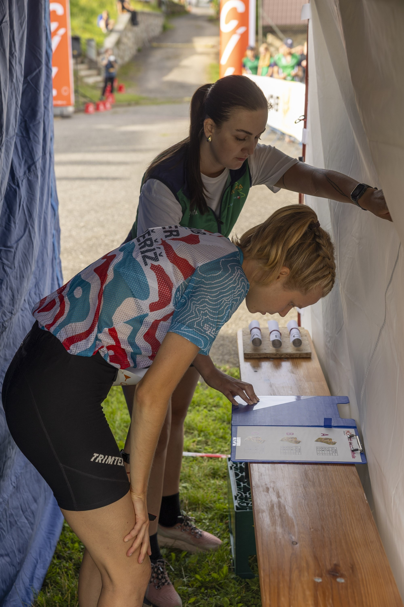
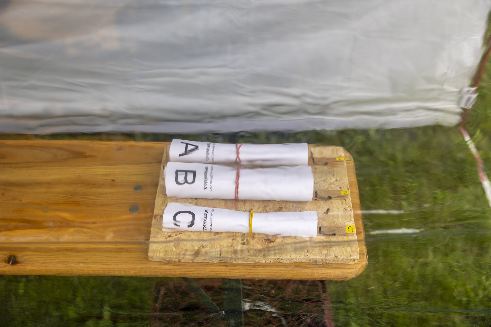

Rozložení konírny
Fotky z loňska
Ať víme, do čeho jdeme. (po kliknutí se fotka zvětší)




Startovní procedura - Jízdní řád
Procedura finále je identická se semifinále. Startuje 6 závodníků (2 z každého SF). Interval D21 F → H21 F je 15 min.
Harmonogram dne
| Čas | Událost | Typ |
|---|---|---|
| 11:00 | Sraz celého týmu přímo v konírně | konírna |
| 11:45 | Otevření karantény semifinále | karanténa |
| 12:00 | Uzavření karantény semifinále | karanténa |
| 12:25 | Svolání D21 SF1 v karanténě (-5 min.) | SF |
| 12:30 | START D21 SF1 | SF |
| 12:30 | Doplnit chybějící ruličky pro D21 SF2 | SF |
| 12:30 | Svolání D21 SF2 v karanténě (-5 min.) | SF |
| 12:35 | START D21 SF2 | SF |
| 12:35 | Doplnit chybějící ruličky pro D21 SF3 | SF |
| 12:35 | Svolání D21 SF3 v karanténě (-5 min.) | SF |
| 12:40 | START D21 SF3 | SF |
| 12:40 | ⚠ KOMPLETNÍ VÝMĚNA ruliček D21 → H21 (jiná trať!) | SF |
| 12:50 | Svolání H21 SF1 v karanténě (-5 min.) | SF |
| 12:55 | START H21 SF1 | SF |
| 12:55 | Doplnit chybějící ruličky pro H21 SF2 | SF |
| 12:56 | Svolání H21 SF2 v karanténě (-5 min., cca) | SF |
| 13:01 | START H21 SF2 | SF |
| 13:01 | Doplnit chybějící ruličky pro H21 SF3 | SF |
| 13:02 | Svolání H21 SF3 v karanténě (-5 min., cca) | SF |
| 13:07 | START H21 SF3 | SF |
| Pauza - výměna materiálů SF → F (mapové výřezy v deskách, ruličky map) | ||
| 13:15 | Otevření karantény finále | karanténa |
| 13:30 | Uzavření karantény finále | karanténa |
| 13:55 | Svolání D21 F v karanténě (-5 min.) | F |
| 14:00 | START D21 F | F |
| 14:00 | ⚠ KOMPLETNÍ VÝMĚNA ruliček D21 → H21 (jiná trať!) | F |
| 14:10 | Svolání H21 F v karanténě (-5 min.) | F |
| 14:15 | START H21 F | F |
| 14:35 | Vyhlášení výsledků MČR KO sprint | |
Tahák pro startéra
Semifinále
D21 SF1 — start 12:30:00
| 12:29:00 | Výzva k deskám: „Závodníci, ke svým deskám!" |
| 12:29:17 | Odpočet: „3, 2, 1, OTEVŘÍT!" (desky otevřeny v 12:29:20) |
| 12:29:37 | Odpočet: „3, 2, 1, ZAVŘÍT!" (desky zavřeny v 12:29:40) |
| 12:29:50 | „Start za 10!" |
| 12:29:55 | „Za 5!" |
| 12:30:00 | VÝSTŘEL |
D21 SF2 — start 12:35:00
| 12:34:00 | Výzva k deskám: „Závodníci, ke svým deskám!" |
| 12:34:17 | Odpočet: „3, 2, 1, OTEVŘÍT!" (desky otevřeny v 12:34:20) |
| 12:34:37 | Odpočet: „3, 2, 1, ZAVŘÍT!" (desky zavřeny v 12:34:40) |
| 12:34:50 | „Start za 10!" |
| 12:34:55 | „Za 5!" |
| 12:35:00 | VÝSTŘEL |
D21 SF3 — start 12:40:00
| 12:39:00 | Výzva k deskám: „Závodníci, ke svým deskám!" |
| 12:39:17 | Odpočet: „3, 2, 1, OTEVŘÍT!" (desky otevřeny v 12:39:20) |
| 12:39:37 | Odpočet: „3, 2, 1, ZAVŘÍT!" (desky zavřeny v 12:39:40) |
| 12:39:50 | „Start za 10!" |
| 12:39:55 | „Za 5!" |
| 12:40:00 | VÝSTŘEL |
KOMPLETNÍ VÝMĚNA ruliček D21 → H21 (jiná trať!)
H21 SF1 — start 12:55:00
| 12:54:00 | Výzva k deskám: „Závodníci, ke svým deskám!" |
| 12:54:17 | Odpočet: „3, 2, 1, OTEVŘÍT!" (desky otevřeny v 12:54:20) |
| 12:54:37 | Odpočet: „3, 2, 1, ZAVŘÍT!" (desky zavřeny v 12:54:40) |
| 12:54:50 | „Start za 10!" |
| 12:54:55 | „Za 5!" |
| 12:55:00 | VÝSTŘEL |
H21 SF2 — start 13:01:00
| 13:00:00 | Výzva k deskám: „Závodníci, ke svým deskám!" |
| 13:00:17 | Odpočet: „3, 2, 1, OTEVŘÍT!" (desky otevřeny v 13:00:20) |
| 13:00:37 | Odpočet: „3, 2, 1, ZAVŘÍT!" (desky zavřeny v 13:00:40) |
| 13:00:50 | „Start za 10!" |
| 13:00:55 | „Za 5!" |
| 13:01:00 | VÝSTŘEL |
H21 SF3 — start 13:07:00
| 13:06:00 | Výzva k deskám: „Závodníci, ke svým deskám!" |
| 13:06:17 | Odpočet: „3, 2, 1, OTEVŘÍT!" (desky otevřeny v 13:06:20) |
| 13:06:37 | Odpočet: „3, 2, 1, ZAVŘÍT!" (desky zavřeny v 13:06:40) |
| 13:06:50 | „Start za 10!" |
| 13:06:55 | „Za 5!" |
| 13:07:00 | VÝSTŘEL |
Finále
D21 F — start 14:00:00
| 13:59:00 | Výzva k deskám: „Závodníci, ke svým deskám!" |
| 13:59:17 | Odpočet: „3, 2, 1, OTEVŘÍT!" (desky otevřeny v 13:59:20) |
| 13:59:37 | Odpočet: „3, 2, 1, ZAVŘÍT!" (desky zavřeny v 13:59:40) |
| 13:59:50 | „Start za 10!" |
| 13:59:55 | „Za 5!" |
| 14:00:00 | VÝSTŘEL |
KOMPLETNÍ VÝMĚNA ruliček D21 → H21 (jiná trať!)
H21 F — start 14:15:00
| 14:14:00 | Výzva k deskám: „Závodníci, ke svým deskám!" |
| 14:14:17 | Odpočet: „3, 2, 1, OTEVŘÍT!" (desky otevřeny v 14:14:20) |
| 14:14:37 | Odpočet: „3, 2, 1, ZAVŘÍT!" (desky zavřeny v 14:14:40) |
| 14:14:50 | „Start za 10!" |
| 14:14:55 | „Za 5!" |
| 14:15:00 | VÝSTŘEL |
Materiál - kontrolní seznam
Stan a konstrukce
- 1x stan nůžkový 3x6 m (hliníková konstrukce!)
- 7x neprůhledná bočnice (1 navíc oproti běžným 6)
- Tyčky / šňůry na vypružení bočnic (proti větru)
- Stahovací pásky / kolíky na fixaci
- 1x rezervní stan 3x3 m (pro případ 7. a 8. závodníka)
Stolečky v kojích
- 12x bedna od Zonky (2 na každou kóji)
- 6x lavice z pivního setu (na bedny)
- Navíc: 4x bedna + 2x lavice (rezervní kóje)
Desky a self-choice
- 8x deska s klipem (stejné!)
- Výřezy SF (3 varianty - dostaneme v pátek)
- Výřezy Finále (jiné než SF! - dostaneme v pátek)
- Izolepa na přilepení výřezů do desek
- Nůžky na stříhání izolepy
Ruličky map
- Kolíčky na prádlo (uchycené na lavici) - varianty A, B, C budou vytištěny na zadní straně mapy (v dolním rohu, viditelné při srolování)
- Ruličky map D21 SF (3 varianty x 22 ks = 66 ruliček)
- Ruličky map H21 SF (3 varianty x 22 ks = 66 ruliček)
- Ruličky map D21 F (3 varianty x 8 ks = 24 ruliček)
- Ruličky map H21 F (3 varianty x 8 ks = 24 ruliček)
- Gumičky na zarolování map
- Oboustranná lepicí páska na uchycení kolíčků na lavici
- Zavíratelná krabice/bedna na ruličky (ochrana před deštěm + aby nikdo neviděl)
Startovní vybavení
- Startovací atletická pistole
- Náboje do pistole (dostatek!)
- Startovní hodiny (umístěné na startovní čáře naproti vedoucímu)
- Kontrola synchronizace SI se správným časem
- SI jednotka s oficiálním časem
- Mobil s aplikací stopky (pro pořadatele se záložními stopkami - odpočet 20 s)
SI krabičky a stojany (karanténa)
- 3x Clear krabička + stojany
- 3x Check krabička + stojany
- 2x SIAC Test krabička + stojany
- Stojany - třebíčské sady
Značení a organizace
- 8x laminovaná cedulka s číslem boxu (1-8)
- Sprej na vyznačení startovní čáry
- Páska na ohraničení prostoru (buffer zóna od diváků)
Dokumenty a seznamy
- Startovní listiny SF (od IT)
- Startovní listiny Finále
- Tento jízdní řád (vytisknout víckrát - převaděč, vedoucí, měnič map, rezerva…)
Pohled závodníka - od karantény po start
Závodník přichází do karantény (SF: do 12:00, F: do 13:30). Orazí si vstupní SI krabičku. Zakázáno: telefon, tablet, sluchátka, komunikace s lidmi mimo karanténu.
Samoobslužný odběr dle vyvěšené startovní listiny v karanténě. Bez startovního čísla nebude připuštěn ke startu!
Asistovaný odběr u pořadatelů v karanténě. Závodník si nejprve vybere velikost vestičky. Následně pořadatel zapne GPS a vloží ji do vestičky dle jmenného seznamu. Bez GPS nebude připuštěn ke startu!
Závodník se rozběhává ve vyhrazeném prostoru karantény. Sleduje hodiny - čeká na svolání své skupiny.
Převaděč svolá 6 závodníků dané skupiny u výstupu z karantény. Kontrola startovního čísla, GPS. Provedení CLEAR, CHECK, SIAC TEST.
Převaděč vede skupinu ke konírně (sousedí s karanténou). Závodník nesmí komunikovat s diváky ani přijímat informace. Ignorovat případné pokřikování diváků!
Závodník vstoupí do svého boxu podle startovního čísla (nejnižší = box 1, nejvyšší = box 6, příp. vyšší), projde ke startovní čáře. Stojí čelem k divákům, je představen. Mává.
Na pokyn vedoucího se závodník otočí a vrátí ke své desce (v boxu). Stoupne si před zavřenou desku. Od tohoto okamžiku je jakákoliv komunikace mezi závodníky důvodem k diskvalifikaci!
Na slovní pokyn vedoucího „3, 2, 1, otevřít!“ pořadatel otevře desku. Závodník vidí 3 výřezy variant tratě (A, B, C). Má 20 sekund na studium a rozhodnutí.
Na slovní pokyn „3, 2, 1, zavřít!“ se desky zavřou. Závodník přejde ke kolíčkům, vytáhne ruličku se zvolenou variantou (A, B nebo C).
Závodník s ruličkou v ruce přejde na startovní čáru. Smí sundat gumičku, ale mapa musí zůstat zarolovaná v ruličce! Nesmí ji rozbalovat.
Výstřel z pistole. Hromadný start celé skupiny (6 závodníků). Závodník může rozbalit mapu až po startu.
Obsazení konírny (tým Start KO SF+F)
Pořadatelé v kojích
| # | Jméno | Role | Poznámka |
|---|---|---|---|
| V | [doplnit] | Vedoucí / Hlavní startér | Řídí celou proceduru, slovní pokyny, startuje pistolí, drží oficiální časomíru |
| 1 | [doplnit] | Pořadatel - Box 1 + zapisovatel | Po startu objede kóje, zapíše do startovky kdo si co vybral, vyfotí a pošle do WA skupiny. |
| 2 | [doplnit] | Pořadatel - Box 2 | |
| 3 | [doplnit] | Pořadatel - Box 3 | |
| 4 | [doplnit] | Pořadatel - Box 4 | |
| 5 | [doplnit] | Pořadatel - Box 5 | |
| 6 | [doplnit] | Pořadatel - Box 6 |
Podpora (karanténa, výměna map, záloha 7./8. box)
| # | Jméno | Úkoly |
|---|---|---|
| 7 | [doplnit] | Svolávání závodníků v karanténě, výpomoc v karanténě (kontrola: startovní číslo, GPS jednotka, clear, check, SIAC test), záloha pro 7. box |
| 8 | [doplnit] | Výměna map (ruličky - D21/H21, SF/F), přelepování mapových výřezů v deskách. Záložní stopky: jistí konírnu zezadu, v případě zpoždění v kóji (pořadatel se opozdí, deska spadne) stopne 20 s té jedné kóji zvlášť. |
| 9 | [doplnit] | Převaděčka (převod závodníků z karantény do konírny), popřípadě svolávačka v karanténě, záloha pro 8. box. |
Klíčové zásady
Nebojte, v pátek si vše vysvětlíme. Ve skutečnosti to bude jednoduché jako facka. 😄
K tisku
Všechny tisknutelné materiály na jednom místě. Tisknout ideálně v pátek na místě, čísla na boxy zalaminovat.
Harmonogram + procedura
Jízdní řád dne a startovní procedura SF i F. A4 oboustranně, vytisknout víckrát (vedoucí, převaděč, měnič map, rezerva).
Tahák pro startéra
Přesné časy odpočtu pro každý rozběh (výzva, otevřít/zavřít desky, výstřel). A4 oboustranně - SF na líc, F na rub.
Čísla na boxy 1-8
Velké cedulky s čísly boxů - 8 listů A4. Vytisknout, ořezat a zalaminovat. Čísla 7 a 8 jsou pro rezervní stan.
Poslední pokyny před startem
5 bodů pro závodníky (clear+check, zákaz rozbalení mapy, výstřel, zákaz komunikace, dotazy). A4, vyvěsit v karanténě / u vchodu do konírny.
Máte tip na vylepšení?
Tipy na vylepšení vítány - hlavně od zkušenějších, kteří konírnu už zažili. Ozvěte se vedoucímu konírny ([email vedoucího] / [telefon vedoucího]).